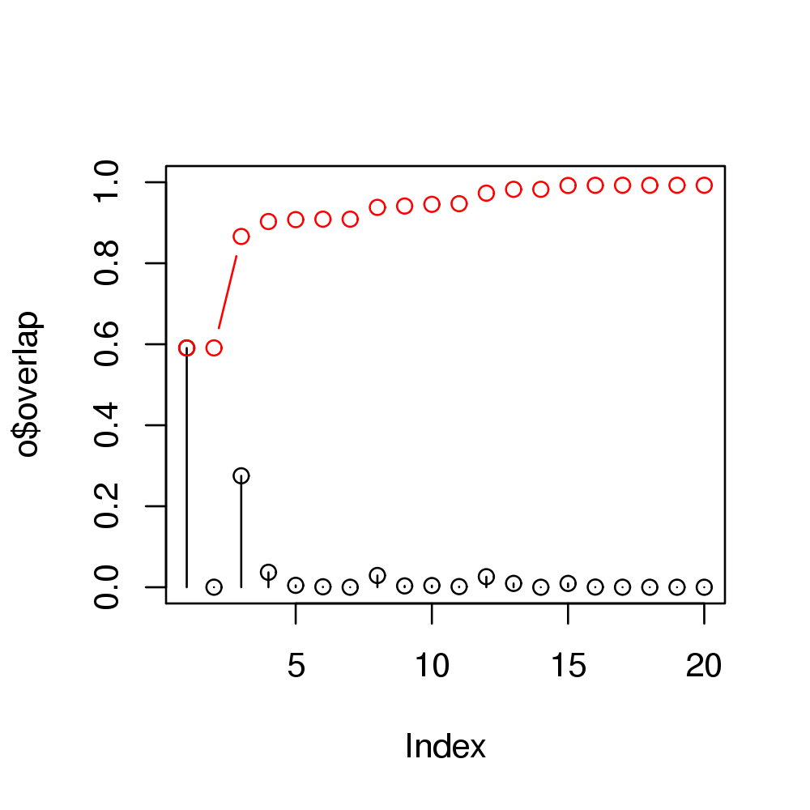

overlap(modes, dv, nmodes = 20)
"pca" or "nma" as obtained from
function pca.xyz or nma. Alternatively a 3NxM matrix
of eigenvectors can be provided. Calculate the Squared Overlap between sets of vectors.
Squared overlap (or dot product) is used to measure the similiarity between a displacement vector (e.g. a difference vector between two conformational states) and mode vectors obtained from principal component or normal modes analysis.
By definition the cumulative sum of the overlap values equals to one.
Structure modes$U (or alternatively, the 3NxM matrix of eigenvectors)
should be of same length (3N) as dv.
Returns a list with the following components:
overlap a numeric vector of the squared dot products (overlap values)
between the (normalized) vector (dv) and each mode in mode.
overlap.cum a numeric vector of the cumulative squared overlap values.
Skjaerven, L. et al. (2011) Proteins 79, 232--243. Grant, B.J. et al. (2006) Bioinformatics 22, 2695--2696.
data(kinesin) attach(kinesin, warn.conflicts=FALSE) # Ignore gap containing positions ##gaps.res <- gap.inspect(pdbs$ali) gaps.pos <- gap.inspect(pdbs$xyz) #-- Do PCA pc.xray <- pca.xyz(pdbs$xyz[, gaps.pos$f.inds]) # Define a difference vector between two structural states diff.inds <- c(grep("d1v8ja", pdbs$id), grep("d1goja", pdbs$id)) dv <- difference.vector( pdbs$xyz[diff.inds,], gaps.pos$f.inds ) # Calculate the squared overlap between the PCs and the difference vector o <- overlap(pc.xray, dv) o <- overlap(pc.xray$U, dv) # Plot results plot(o$overlap, type='h', ylim=c(0,1))points(o$overlap)lines(o$overlap.cum, type='b', col='red')
detach(kinesin) ## Calculate overlap from NMA pdb.a <- read.pdb("1cmk")Note: Accessing online PDB file HEADER TRANSFERASE/TRANSFERASE INHIBITOR 18-NOV-93 1CMK PDB has ALT records, taking A only, rm.alt=TRUEpdb.b <- read.pdb("3dnd")Note: Accessing online PDB file HEADER TRANSFERASE/TRANSFERASE INHIBITOR 02-JUL-08 3DND PDB has ALT records, taking A only, rm.alt=TRUE## Fetch CA coordinates sele.a <- atom.select(pdb.a, "//E/15:350///CA")Build selection from input string segid chain resno resid eleno elety Stest "" "E" "15:350" "" "" "CA" Natom "3009" "2853" "2810" "3009" "3009" "368" * Selected a total of: 334 intersecting atoms *sele.b <- atom.select(pdb.b, "//A/1:350///CA")Build selection from input string segid chain resno resid eleno elety Stest "" "A" "1:350" "" "" "CA" Natom "2916" "2759" "2916" "2916" "2916" "354" * Selected a total of: 334 intersecting atoms *xyz <- rbind(pdb.a$xyz[sele.a$xyz], pdb.b$xyz[sele.b$xyz]) ## Superimpose xyz[2,] <- fit.xyz(xyz[1,], xyz[2,], 1:ncol(xyz)) ## The difference between the two conformations dv <- difference.vector( xyz ) ## Calculate normal modes modes <- nma(pdb.a, inds=sele.a)Building Hessian... Done in 0.319 seconds. Diagonalizing Hessian... Done in 1.921 seconds.# Calculate the squared overlap between the normal modes # and the difference vector o <- overlap(modes, dv)